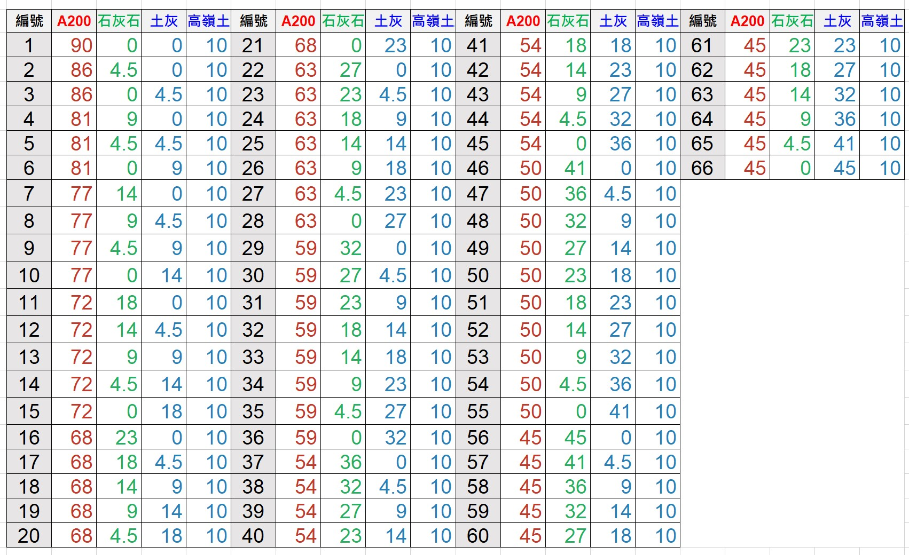

在前兩次的三角座標實驗中，我們掌握了基礎礦物原料的熔融規律。本次課程我們進一步導入具傳統灰釉特性的「A200長石、石灰石、合成土灰、(高嶺土)」三元配方系統，並在每一組配方中固定配置 10% 高嶺土（相當於三元主體佔 90%、高嶺土佔 10% 的折算比例），以強化生釉的懸浮性、坯釉附著力與高溫黏度骨架。
更值得深入探討的是，本次實驗同時採用「白瓷土試片」與「含鐵陶土試片」進行雙胎體同步施釉與 1250°C 電窯氧化燒恆溫30分鐘。透過雙胎體的平行對照，我們能精準觀察同一支釉藥在低鐵白胎與高鐵紅棕胎上，如何因為胎釉交界處的鐵質擴散（火刺現象）與底色反射，演繹出截然不同的發色深度與光澤層次。
一、66個試片的配方設計與三元原料特性
本實驗將 90% 的三元變化主體劃分為 11 排、共 66 個座標點，並統一加入 10% 高嶺土作為基礎穩定劑。頂點（編號 1）為 A200長石 90% + 高嶺土 10%，往下每排遞減約 4.5%（5%×0.9）長石至最底排的 45%；左下軸線遞增石灰石（0%～45%），右下軸線則遞增合成土灰（0%～45%）：

- 頂部角（A200 長石，90% → 45%）： 作為釉藥的玻璃形成主體與鹼金屬（K₂O、Na₂O）來源，提供高溫熔融所需的矽鋁骨架，但單獨使用時高溫黏度高、不易排泡，呈現乳濁半失透質感。
- 左下角（石灰石，0% → 45%）： 主要成分為碳酸鈣（CaCO₃），高溫分解後釋出純淨的氧化鈣（CaO），是強效的高溫助熔劑，能大幅降低釉液黏度、提升玻璃清澈度，過量則會造成劇烈垂流。
- 右下角（合成土灰，0% → 45%）： 模擬天然植物草木灰成分調配而成的複合原料，除了富含氧化鈣外，還含有氧化鎂（MgO）、氧化鉀、微量氧化磷（P₂O₅）與氧化鐵。在長石系統中引入合成土灰，極易誘發微細分相乳濁（失透無光）與溫潤的玉質感；當比例高至極限時則轉為高流動性灰釉。
- 固定外加 10% 高嶺土（Al₂O₃·2SiO₂·2H₂O）： 貫穿全場 66 個試片的關鍵穩定劑。提供充足的氧化鋁（Al₂O₃）與二氧化矽（SiO₂），有效防止全場試片在 1250°C 發生失控流釉黏板，並使生釉緊密貼合坯體。
二、瓷土與陶土雙胎體三角座標燒成全貌
試片出窯後，我們分別將 66 片白瓷土試片與 66 片陶土試片依三角座標排列展開。兩組矩陣展現出驚人的規律性與對比美感：在白瓷土上，釉層呈現潔白、青白冰裂與如凝脂般的乳濁色階；而在含鐵陶土上，高溫熔融的鹼土金屬（CaO、MgO）強烈侵蝕坯體表面的氧化鐵，在釉層邊緣暈染出迷人的紅褐色「火刺」過渡帶，並使透明釉層轉化為深邃溫潤的茶褐與青褐灰釉色調。
.jpg)
.jpg)
三、頂部高長石與乳濁失透區：玉質感半無光白釉（編號 7～14）
首先觀察三角座標中上段（第 4 排至第 5 排，A200 長石佔 72%～77%）。在這個區域中，鹼金屬長石仍佔主導地位，配合 10% 高嶺土與適量的石灰石、合成土灰，釉液在高溫下形成無數微米級的氣泡與液-液分相結構，使光線產生漫反射，造就出極具實用價值的「乳濁半失透」與「失透無光」釉面。
.jpg)
7、8 號石灰石較多呈亮面細開片；9 號（長77/灰4.5/土灰9/土10）轉為溫潤的半失透無光白釉，質感極佳。
.jpg)
9 號在陶土上呈現宛如落雪般的乳白半失透質感，下緣暈出溫暖的紅褐色火刺邊，陶土與瓷土表現皆極為出色！
.jpg)
11 號（長72/灰18/土灰0/土10）呈現乳濁半失透開片；14 號（長72/灰4.5/土灰14/土10）受合成土灰影響轉為細膩失透無光。
.jpg)
11 號在陶土上展現迷人的銀灰白乳濁半失透層次；14 號則如濃稠凝脂般包覆紅棕胎體，雙胎體適應性極高。
.jpg)
.jpg)
四、中腰橫向梯度：失透無光到釉珠垂掛的臨界點（編號 18～21）
接著我們將視線移至第 6 排右側（編號 18、19、20、21，A200 長石固定為 68%），觀察當石灰石逐步遞減、合成土灰遞增至 18%～23% 時，釉面產生的戲劇性轉折：
.jpg)
19 號比 14 號更為失透無光，呈現厚實雪白蛋白石質感；21 號合成土灰達 23%，高溫表面張力收聚出飽滿的釉珠垂掛效果！
.jpg)
18 號半透明帶白點；19 號細膩失透無光；20 號重新玻化；21 號在瓷土上同樣聚集成圓潤不滴落的厚釉珠。
.jpg)
.jpg)
五、中下翼高助熔區：1250°C 高溫透明基礎釉（編號 26、27）
當配方進入第 7 排中右段（編號 26、27，A200 長石降至 63%，石灰石與合成土灰總和達 27%），充足的鹼土金屬氧化物（CaO + MgO）徹底打斷了矽氧四面體的長鏈網絡，高溫黏度大幅下降，釉層中的微氣泡得以完全逸出，轉化為清澈透亮的玻璃相：
.jpg)
(長63 / 灰9~4.5 / 土灰18~23 / 土10)
釉層清澈透明、冰裂紋理雅緻，下緣積釉處如水滴般晶瑩，是極佳的 1250°C 高溫透明基礎釉。
.jpg)
在陶土上完全透出深邃溫潤的胎土原色與冰裂開片，27 號流動性略高於 26 號，適合當作高溫青瓷或色釉母釉。
六、底排極限助熔區：高流動性與 1200～1220°C 透明基礎釉（編號 56～66）
來到三角座標最底部的第 11 排（A200 長石降至 45%，石灰石與合成土灰總和高達 45%）。在 1250°C 的高溫下，這個區域的助熔劑含量已達到高流動臨界點：
.jpg)
左下高石灰石頂點（灰 45%～36%），鈣質過飽和呈現乳白帶微青玻璃質，58 號已出現明顯向下垂流。
.jpg)
高鈣強烈侵蝕陶土鐵質，表面析出鈣白霧斑與黃褐玻璃分相，58 號強烈流釉至試片底部邊緣。
.jpg)
(長45 / 灰14~4.5 / 土灰32~41 / 土10)
高比例合成土灰帶來極佳的清澈透明度與強流動性，底部聚積成厚實翠綠水滴狀。
.jpg)
在 1250°C 下流動強、透明性極佳，呈現經典古青瓷般的茶青玻璃光澤；若降溫至 1200～1220°C 燒成，則是不易流釉的絕佳透明基礎釉！
.jpg)
.jpg)
- 「雙胎體皆宜」的乳濁半失透／失透無光釉首選：
想做出溫潤不刺眼、兼具玉質感且無論施在白瓷土或含鐵陶土上都有極高良率的實用釉，請優先選用中上段配方：
• 編號 9（A200 77 / 石灰石 4.5 / 合成土灰 9 / 高嶺土 10）：半失透無光，質地細膩溫潤，適合日常茶器與餐具。
• 編號 11（A200 72 / 石灰石 18 / 合成土灰 0 / 高嶺土 10）：乳濁半失透帶雅緻開片，在陶土上更能襯托紫褐底韻。
• 編號 14（A200 72 / 石灰石 4.5 / 合成土灰 14 / 高嶺土 10）與 編號 19（A200 68 / 石灰石 9 / 合成土灰 14 / 高嶺土 10）：合成土灰達 14% 時失透無光效果最為純熟（19 號失透度更勝 14 號），呈現如奶油凝脂般的頂級消光白釉。 - 藝術創作專用「垂掛釉珠效果」配方：
鎖定 編號 21（A200 68 / 石灰石 0 / 合成土灰 23 / 高嶺土 10）。此配方在 1250°C 具有優異的流動感與高溫內聚力，施厚釉時能在器物肩部或轉折處凝結出晶瑩飽滿的釉珠而不致嚴重黏板，瓷土與陶土皆能展現極佳層次。 - 依燒成溫區精準挑選「透明基礎釉（母釉）」：
• 1250°C 高溫透明基礎釉：請選用 編號 26（A200 63 / 石灰石 9 / 合成土灰 18 / 高嶺土 10） 與 編號 27（A200 63 / 石灰石 4.5 / 合成土灰 23 / 高嶺土 10）。兩者在 1250°C 下透明度高、冰裂紋均勻且流動性在安全可控範圍內，非常適合作為添加氧化鐵（青瓷）、氧化銅或色料的標準高溫基礎釉。
• 1200～1220°C 中高溫透明基礎釉：底排右段的 編號 63、64、65（A200 45 / 石灰石 14～4.5 / 合成土灰 32～41 / 高嶺土 10） 因助熔劑總量高達 45%，在 1250°C 下流動性極強、玻璃感極透；將這三組配方移至 1200～1220°C 燒成，既能保有極高的清澈透明度，又能完美克服過流問題，是中溫轉高溫區間極具潛力的透明基礎母釉！ - 胎土選擇對發色的影響提示：
同一支配方施於白瓷土時能純粹呈現釉藥本身的乳濁度與冰裂結構；施於含鐵陶土時，鈣鎂助熔劑會主動萃取胎土中的氧化鐵，在釉緣形成自然的紅褐色「火刺」並賦予釉面古樸的茶青、灰褐底蘊。創作者可依作品風格自由搭配雙胎體效果。